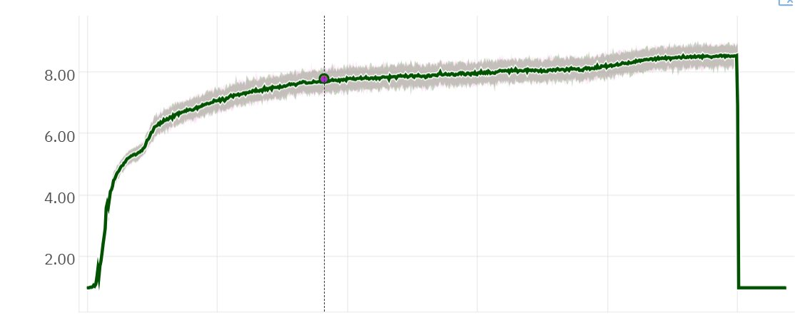

The Tragedy of Reinforcement Learning

Or: how the genie went back into the bottle for years. This is, at least from my perspective, the true story of what happened to reinforcement learning and why it's only really starting to kick off now.
Some Background
I started doing reinforcement learning in ~2017. By then, I had already started Neural MMO, the project that would become the topic of my entire PhD and that would lay the foundation for my work on PufferLib today. The major labs were also doing (tabula-rasa, non-language-model) RL back then. In fact, it was the main focus of most work. Multiagent was just starting to take off and all the core algorithms had just been published. With AlphaGo, researchers had already seen the potential. OpenAI Five was in development, and I got to see a bit of that work first hand, as I was interning at the time.
DoTA was the magic project that fully sold me on RL. If you do not play games... it is an inconceivably complicated problem. As in, you will not believe that people actually pick this up as a hobby. It's hard to compare to Go apples to apples, but it definitely involves a number of types of reasoning absent from the former that are relevant in the real world. High and low-level strategy, control, team coordination, and theory of mind, to name but a few. OpenAI beat top pros at the game with 168M parameter network trained with ~1000 GPUs. You could probably do it on 64-128 H100s now. It wasn't just one result either. AlphaStar, Capture the Flag, Emergent Tool Use... there were several major RL showcases in rapid succession. So given the ludicrous potential on clear display, surely the field kept pushing forward, right... right???
Why RL Fell Off
Some work continued from 2019-2022, but RL was definitely on the decline. Even though there were more papers for a few of those years, there weren't many enduring breakthroughs at the level of what we saw in 2017-2019. So what happened? Academic Myopia: The field collectively decided on a set of standards that made progress nearly impossible with no practical justification. For historical reasons, Atari became the most common benchmark. Atari has 57 games, and you need to run them all (ideally with multiple seeds each) because of how swingy those tasks can be. At the same time, the field decided that the x axis should be samples, not wall-clock time. The idea behind this was that it is a better proxy for learning in the real world where many problems are rate limited. And also you don't have to worry about different hardware setups across papers. The obvious problem is that, with no restriction of hardware usage, you can spend arbitrarily more compute to push benchmarks up. So research just got slower and slower to the point that papers were spending weeks of GPU time per individual run of each game. Since academia is allergic to engineering, the code bases were also horribly slow. Not to mention the limited budgets... so yeah, you end up needing 10,000 GPU hours on <5% utilization to run one set of ablations for anything. Not a recipe for progress, or for good science. If you didn't have 10k GPU hours, you just didn't run the ablations and published anyways. No wonder most stuff from this era doesn't replicate.
Shiny Object Syndrome: LLMs happened. People often ask me why I hate LLMs. I really don't. I hate that they drained 99% of the talent from other areas instead of a more reasonable say 80% based on the promise on display. I watched my most talented colleagues leave RL one by one to be hired for LLM research. And I don't blame them. Working on RL sucked. It was hard, brutal work fighting a set of standards seemingly designed to make real progress impossible. Basic stuff you take for granted in general deep learning, even stuff from as early as 2015... just didn't exist in RL. Hyperparameters made no sense, models couldn't scale, and sanity tasks didn't transfer. Even though we had proof RL could work on incredible problems like DoTA and Go, the day to day just felt hopeless.
RL Now: The Lessons Nobody Learned
Slow experiment cycles, overtuned evals, slow dev cycles... sound familiar? Modern RL research has somehow managed to invest billions of dollars to replicate the same mess that killed RL research originally. I don't doubt that it will get farther this time if for no other reason than that there is money on the table... but it is massively inefficient. It's something of a horror show watching the field rediscover pitfalls we patched years ago while inventing a new lexicon for everything. "Multi-turn RL" means "not a bandit." Which is everything, outside of some niche theory research. "Long horizons" are not new either, nor is this the full picture on what makes problems hard. At the same time, I don't blame modern distrust of older RL research, because most of the publications are wrong.
An Alternative Path
I'm still here plodding along with small-model tabula-rasa RL. Except instead of this being the fading old guard, we're making breakthroughs at breakneck pace. So what changed? After finishing my PhD, I decided that I was going to rebuild RL from the ground up completely free from the arbitrary standards set by academic research. The criterion would be wall-clock training time, and performance engineering would be just as important as algorithmic work on the path to getting there. I spent months shredding all the slow infrastructure and targeting millions of steps per second throughput instead of thousands. At first, this just produced a faster version of methods we already had. Mind you, that's already enough to solve a ton of problems in industry that would have been impractical before due to cost. But that's not all - this process actually set us up to do quality research faster than ever before. You don't need to be clever about your methodology when you can run 1000x the experiments. There's no need to carefully select which knobs to fiddle with when you can test them all.
A year ago, you needed a PhD in RL and weeks to months for each new problem. Or much longer if you didn't have the experience. We now have brand new programmers getting RL working on new problems in days. Not super hard ones mind you -- those still take a bit of experience. But it's much better than before.
Signs we're on the right direction: Our experiments on simple environments generalize to harder environments. We think that small batch sizes and specific degenerate hyperparameters were the culprit before. It's not 100% - there are definitely techniques where you only see the benefit on harder problems. But we have enough of those that run in minutes now to still have a quite fast dev cycle.
What's next: We can already solve valuable problems with what we have now. Anywhere we can build a fast simulator, the RL mostly works. Heck, it works out of the box on many problems. Longer term, we will actually go back to some of the old sample efficiency research. But we're going to still approach that from the perspective of at least maintaining flop efficiency.. No more GPUs on 5% utilization running batch size 8 on a 2M parameter network. I'd like to treat the sample efficiency problem as a pareto frontier instead, where you can either spend more data or more flops. Neither is sacred, which matters more depends on the problem.
Some Closing Remarks
I wrote this just to get some quick thoughts out on what's been going on in the field lately. It's mostly a matter of seeing the potential of RL go unrealized while knowing that there are no fundamental barriers to progress. If you'd like to help us get the field to where it should be, join discord.gg/puffer. All our dev is open source, and most of the environments are written by contributors, many of whom come in without any RL experience.